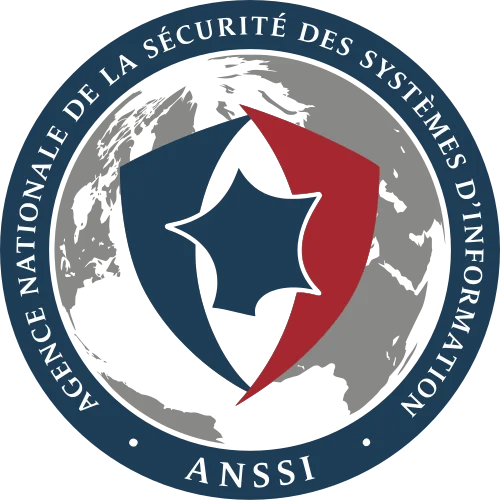

Agence Nationale de la Sécurité des Systèmes d'Information
Formation officielle · Référentiels ANSSI
Le Centre Hospitalier Sud-Francilien a été paralysé pendant des semaines par un ransomware. Les attaquants ont utilisé des comptes Active Directory compromis sans MFA pour se propager. Données de patients exposées, systèmes bloqués. Un administrateur formé en cybersécurité aurait pu identifier et corriger cette faille avant l'attaque.
| Critère | SecNumacadémie ✓ | Coursera Cybersec | LinkedIn Learning |
|---|---|---|---|
| Source | Autorité nationale FR | Université privée | Plateforme privée |
| Coût | Gratuit | Payant | Payant |
| Référentiel | Officiel ANSSI | Variable | Variable |
| Légitimité France | Maximale | Partielle | Faible |
SecNumacadémie m'a donné le cadre conceptuel qui manquait à ma formation technique : comprendre pourquoi on sécurise, pas seulement comment. Un administrateur qui raisonne en sécurité dès la conception est plus fiable qu'un administrateur qui ajoute la sécurité après coup.